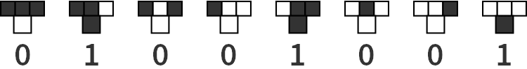

@charak
@charakEin Automat für Pixelmuster
Mich stimmt es traurig, wenn jemand stolz verkündet, in Mathe immer eine Niete gewesen zu sein. Weil das ja nur etwas für Nerds sei, viel zu kompliziert und im Alltag ziemlich unbrauchbar.
Natürlich gibt es wie in jeder Wissenschaft auch in Mathematik superspezialisierte Bereiche, die ohne Fachwissen unverständlich sind und deren Nutzen nur für einen kleinen Bereich von Bedeutung sind. Andererseits finde ich bestimmte Themen der Mathematik praktisch (z. B. Bruchrechnen), verblüffend (z. B. Seil am Äquator verlängern) oder wirklich schön (z. B. Parkettierung).
Besonders faszinierend finde ich, wenn aus eher kleinen Vorgaben ein überraschend komplexes Ding entsteht, das sich nicht intuitiv vorhersagen lässt. Ein Beispiel dafür ist ein zellulärer Automat (englisch: cellular automaton, kurz „CA“).
Wir bauen einen zellulären Automaten
Viel braucht man dafür nicht, eigentlich nur eine große, leere Fläche mit einzelnen Bildpunkten („Zellen“). Unser Automat soll eindimensional werden, das heißt, er arbeitet die Fläche zeilenweise stur von oben nach unten ab. Als Ausgangspunkt färben wir in der ersten Zeile die mittlere Zelle schwarz.

Jetzt kommt die Kleinigkeit, die unseren zellulären Automaten zum Laufen bringt: Wir legen eine Regel fest, wie die Zellen ab der zweiten Zeile eingefärbt werden sollen. Dazu schauen wir uns für jede Zelle immer die drei Nachbarn in der vorigen Zeile an (schräg links darüber, direkt darüber und schräg rechts darüber). Wenn davon zum Beispiel alle drei weiß sind, dann legen wir mal fest, dass die fragliche Zelle in der neuen Zeile schwarz werden soll.
Insgesamt gibt es acht Fälle, wie die drei Zellen in der vorangegangenen Zeile aussehen können. Für jeden dieser Fälle legen wir fest, was mit der Zelle darunter passieren soll. Ich hab zum Beispiel mal folgendes ausgewählt:

Für jede der acht Positionen bestimmen wir entweder 0 (bleibt weiß) oder 1 (wird eingefärbt), womit insgesamt 255 verschiedene Regeln möglich sind. Unsere gewählte Regel lässt sich kurz als 01001001 schreiben. Lesen wir das als Zahl im Binärsystem, können wir das in die Dezimalzahl 73 übersetzen, das ist verständlicher. Nun wird es Zeit für die Praxis, wir starten unseren zellulären Automaten …
Einfache Regel, kompliziertes Ergebnis
Die Regel (zwischen 0 und 255) sieht grafisch so aus:
Und so füllt der Automat damit das Feld:
![Statisches Feld, wie es mit der Regel 73 gefüllt wird]()
Oha, es entsteht ein überraschend kompliziertes Muster! Und das Beste: Der Automat hier ist interaktiv. Die grünen Elemente oben lassen sich ändern. Klicke zum Beispiel die grafische Darstellung der Regel an (die acht T-förmigen Kästchen). Du kannst die Nummer einer Regel auch in das Textfeld eingeben (muss zwischen 0 und 255 liegen). Mir gefallen recht gut die Regeln 30, 161 oder 225.
Außer der Regel selbst kannst du noch die Startbedingungen verändern. Klicke weitere Pixel in der ersten Zeile an und färbe sie um. Um verschiedene Ausgangszeilen zu testen, finde ich die Regel 109 recht interessant.
Wer hat’s erfunden? Die Natur!
Noch bevor im Jahr 1940 Stanislaw Ulam und John von Neumann das Konzept zellulärer Automaten vorgestellt und weiterentwickelt haben, hat die Natur die Musterbildung nach Regeln schon längst praktiziert. Zum Beispiel entstehen Zebrastreifen nach einem vergleichbaren Prinzip. Besonders eindrucksvoll finde ich es beim Weberkegel. Das Muster auf dem Gehäuse dieser Muschel sieht der Regel 30 verblüffend ähnlich.
{kind=link}
Übrigens bietet die mathematischen Suchmaschine Wolfram Alpha für Elementare Zelluläre Automaten (so wie unserer) eine Übersicht aller 255 Regeln.
Darüber hinaus gibt es noch andere Typen zellulärer Automaten. Bei eindimensionalen Automaten zweiter Ordnung wird zusätzlich noch die Zeile über der direkt darüberliegenden bei der Musterbildung berücksichtigt. Und Automaten mit 2,5 Dimensionen betrachten nicht die Zeile darüber, sondern die Nachbarzellen ringsherum. Das bekannteste Beispiel dafür ist Conway’s Game of Life, wo sich Pixelgruppen wie lebendige Wesen über die Fläche bewegen. Bei anderen Varianten spielen auch verschiedene Farben eine Rolle – es gibt viel zu entdecken!
---
Rubrik(en): #sujet